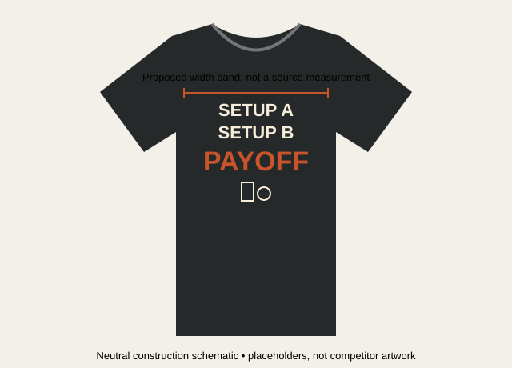

The type supplies attitude; one accent selects the payoff; a small object cue grounds the audience.
H2-031 · Primary: condensed contrast stack
Tall condensed capitals; alternation of large topic words and small connecting lines; light distress against olive shirt. No illustration. Full garment shown; textile composition not known.
Original listing ↗H2-022 · Primary: accent hierarchy
Clean condensed sans, a single yellow headline and simple clock icon; lower lines remain supporting. Graphic-only capture: black field is visible, but print size on a shirt is unknown.
Original listing ↗H2-043 · Supporting: compact text mass
Tall condensed, distressed capitals with one italicized emphasis. A narrow left-aligned block, not equal centered rows. Supports type-led character; alignment is an observed variation.
Original listing ↗Neutral construction

Keep the read sequence short. Contrast is produced through size, weight and one accent—not a scene. The target icon is a contextual adaptation, not a feature shared by every source.
Proposed application palette: charcoal / warm ivory / burnt orange. Analyst-selected colors, not sampled source ink specifications.
| Dimension | Observed in sources | Application rule / hypothesis |
|---|
| Visual character | Assertive condensed capitals; clean in H2-022, distressed in H2-031/043. | Clean industrial lettering for the inspection-like joke; distress optional, not defining. |
| Hierarchy | Large topic words against smaller connecting lines; selective yellow emphasis in H2-022. | Two equal setup rows; bigger final row; orange only on WRONG and the tag. This exact hierarchy is our adaptation. |
| Composition | Compact text blocks; no rectangular scenery. Centered and left-aligned variants. | Centered, near-equal line widths; small icon below; no surrounding market landscape. |
| Garment | Black/olive crewneck mockups; substantial empty torso below print. No on-body evidence. | Dark neutral regular/relaxed crewneck; smooth matte surface proposed to protect small counters. Fabric weight/composition and drape not established by sources. |
| Scale | H2-031/043 estimated print width about 60–70% of torso width below armholes, visually estimated from mockups. | Target about 50–55% for this trial; intentionally smaller. Ratios are not physical print dimensions. |
| Failure boundary | Typography can become a generic slogan. | If the tag/cabinet is unreadable, niche relevance weakens. Excess compression hurts reading; bright accents on every line remove hierarchy. |